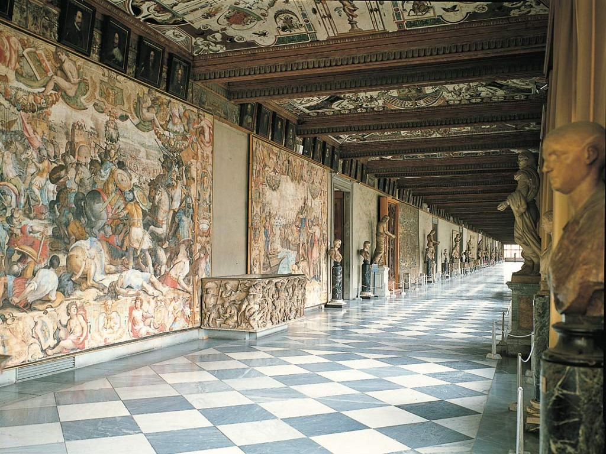
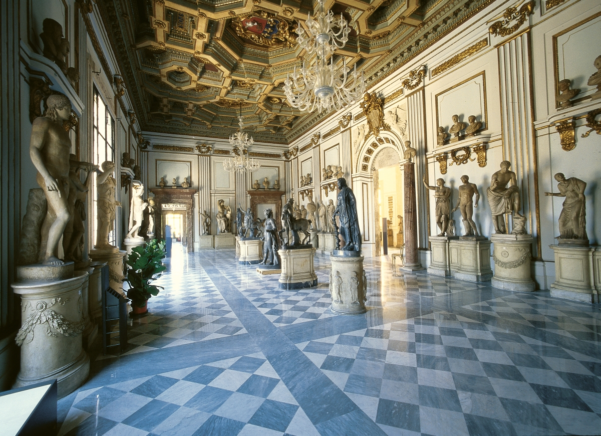
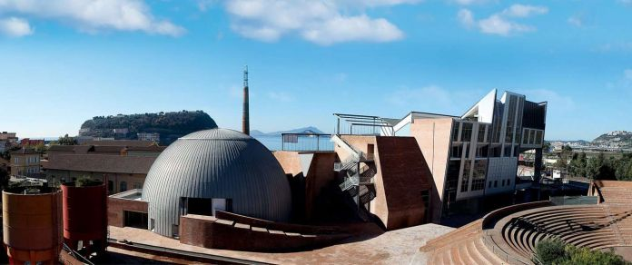
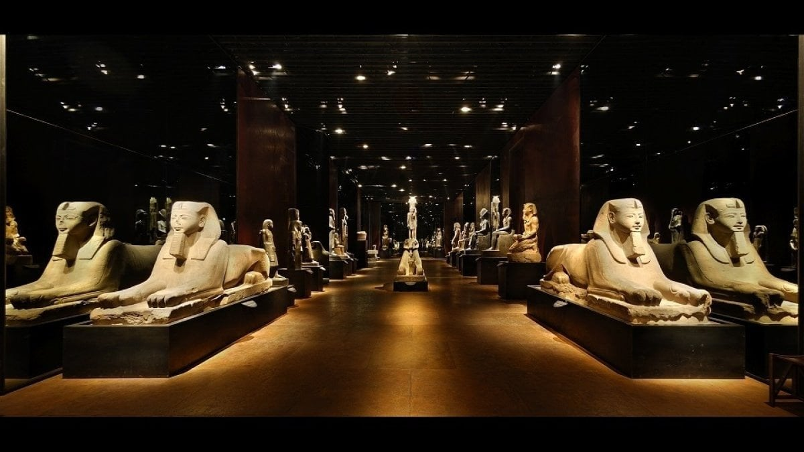
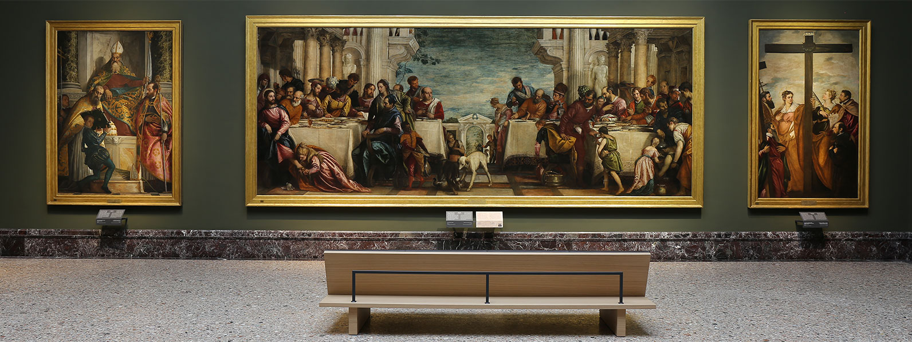

Galleria degli Uffizi
Città: Firenze
Tipo: Arte
La Galleria degli Uffizi è un museo statale di Firenze, che fa parte del complesso museale denominato Gallerie degli Uffizi e comprendente,
oltre alla suddetta galleria, il Corridoio vasariano, le collezioni di Palazzo Pitti e il Giardino dei Boboli, che insieme costituiscono per
quantità e qualità delle opere raccolte uno dei più importanti musei del mondo.
Vi si trovano la più cospicua collezione esistente di Raffaello e Botticelli, oltre a nuclei fondamentali di opere di Giotto, Tiziano, Pontormo,
Bronzino, Andrea del Sarto, Caravaggio, Dürer, Rubens, Leonardo da Vinci ed altri ancora.
Il museo ospita una raccolta di opere d'arte inestimabili, derivanti, come nucleo fondamentale, dalle collezioni dei Medici, arricchite nei secoli da lasciti,
scambi e donazioni, tra cui spicca un fondamentale gruppo di opere religiose derivate dalle soppressioni di monasteri e conventi tra il XVIII e il XIX secolo.
Divisa in varie sale allestite per scuole e stili in ordine cronologico, l'esposizione mostra opere dal XII al XVIII secolo, con la migliore collezione al mondo
di opere del Rinascimento fiorentino. Di grande pregio sono anche la collezione di statuaria antica e soprattutto quella dei disegni e delle stampe che, conservata
nel Gabinetto omonimo, è una delle più cospicue ed importanti al mondo.

Musei Capitolini
Città: Roma
Tipo: Arte
I Musei Capitolini costituiscono la principale struttura museale civica comunale di Roma, parte del Sistema Musei di Roma Capitale.
Aperti al pubblico nell'anno 1734, sotto papa Clemente XII, sono considerati il primo museo al mondo, inteso come luogo dove l'arte
fosse fruibile da tutti e non solo dai proprietari.
Si parla di "musei", al plurale, in quanto alla originaria raccolta di sculture antiche fu aggiunta da
papa Benedetto XIV, nel XVIII secolo, la Pinacoteca, costituita da opere illustranti soggetti prevalentemente romani.

Città della Scienza
Città: Napoli
Tipo: Scienza
La Città della scienza è un'area di promozione e divulgazione della scienza gestita dalla Fondazione IDIS-Città della scienza e sita nel quartiere di Bagnoli a Napoli.
L'area è articolata in una struttura multifunzionale composta da un museo scientifico interattivo, un incubatore di imprese, un centro di formazione, un giardino
didattico e varie altri luoghi.

Museo Egizio
Città: Torino
Tipo: Storia
Il Museo Egizio di Torino è il più antico museo, a livello mondiale, interamente dedicato alla civiltà nilotica ed è considerato, per valore e quantità dei reperti,
il più importante al mondo dopo quello del Cairo.

Pinacoteca di Brera
Città: Milano
Tipo: Arte
La Pinacoteca di Brera è una galleria nazionale d'arte antica e moderna, collocata nell'omonimo palazzo, uno dei complessi più vasti di Milano con oltre 24 000 metri
quadri di superficie.
Il museo espone una delle più celebri raccolte in Italia di pittura, specializzata in pittura veneta e lombarda, con importanti pezzi di
altre scuole.
Inoltre, grazie a donazioni, propone un percorso espositivo che spazia dalla preistoria all'arte contemporanea, con capolavori di artisti del XX secolo.